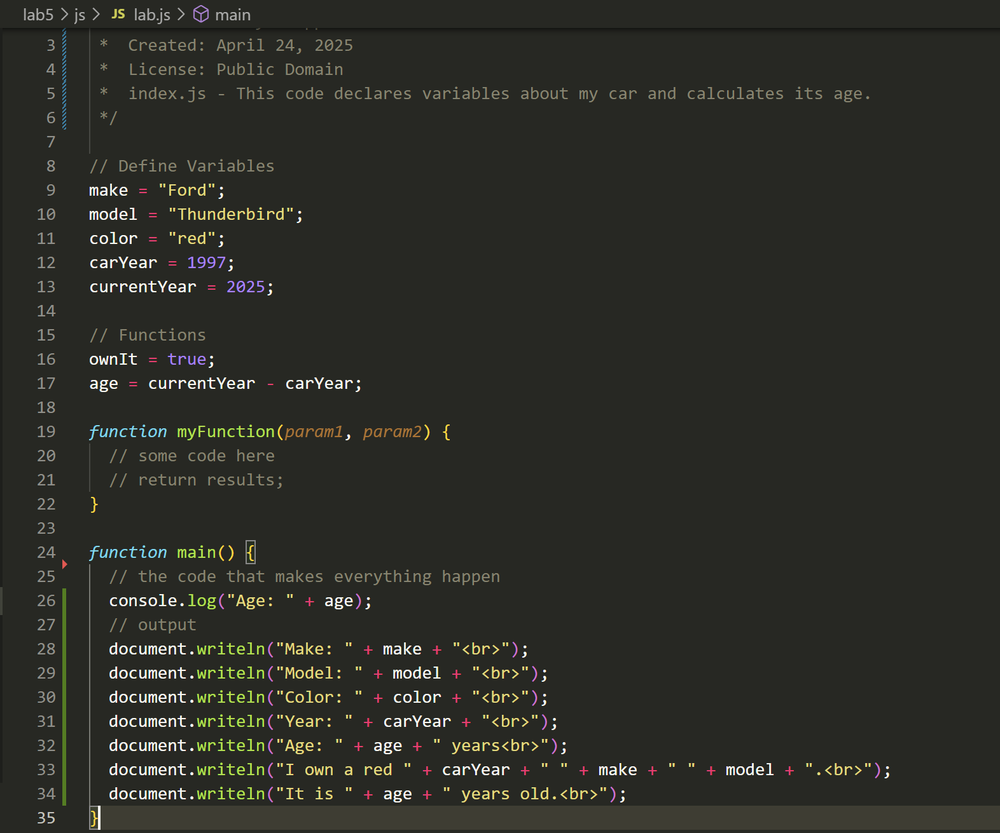

Lab 5 - Data Types & Variables
Challenge
The challenge of Lab 5 was to use data types and create variables in JavaScript, and then output the JavaScript in HTML on our webpage. We were also tasked with creating a variable "age" that calculates the age of our vehicle using carYear and currentYear, and pasting an image into HTML.
Problems
My lab partner had problems with a disappearing webpage, which we solved by eliminating typos in JavaScript. I also had trouble with placing the code in JavaScript (should it go in function Main? At the top? etc.), and I realized that variables should be placed at the top before any functions, while the output (document.writeln) should go in Main.
Reflection
This assignment took more time than most other ones due to the task of creating code in JavaScript. Making sure our program executed and printed the correct information took some troubleshooting and various implementations. I spent a lot of time in this lab helping my classmates display the information correctly on their webpage, which was caused by a mix of JavaScript and HTML errors.
Results
You are viewing the index.html file I created. Here is the program execution, calculating the age of my car:
Script Output
Below is a screenshot of my JavaScript code in VSCode.
